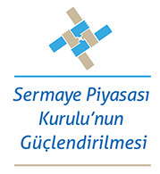

Bu proje Avrupa Birliği ve
Türkiye Cumhuriyeti
tarafından finanse edilmektedir.
Türkiye Cumhuriyeti
tarafından finanse edilmektedir.

Proje Faaliyetleri
Bileşen 1
Muhasebe
* Uluslararası Muhasebe Standartlarına ilişkin üç (3) günlük bir seminer, 28 ile 30 Mart 2016 tarihleri arasında Sermaye Piyasası Kurulu’nun Ankara’daki merkezinde gerçekleştirilmiştir. Proje ortak direktörü Sinem Arı Öz ile kısa dönem uzmanlar tarafından verilen seminere yaklaşık 60 SPK uzmanı katılım sağlamıştır ağırlanmıştır. Ayrıca, SPK tarafından belirlenen bir uzman gruba, 22 Mart 2017 tarihinde, bir günlük eğitici eğitimi programı düzenlenmiştir.
* Seminerin ilk gününde Galin Berbenkov, Sinem Arı Öz ve İlkay Alpkaya Ünlükal tarafından AB muhasebe direktifleri, kavramsal çerçeve, Uluslararası Muhasebe Standartları (UMS) 1, 11, 18, 40 ve Uluslararası Finansal Raporlama Standartları (UFRS) 1 ve 15’e ilişkin bilgiler aktarılmıştır. Seminerin ikinci ve üçüncü günlerinde Sinem Arı Öz ve Brian Connolly tarafından UFRS 3, UFRS 10,UFRS 11,UFRS 12, UFRS 13 ile UMS 27, UMS 28, UMS 36 UMS 12, UMS 21, UMS 23, UMS 32, UMS 37, UMS 39 ve UFRS 7 ile UFRS 9 konularına üzerinde durulmuştur.
* Konuyla ilgili olarak ayrıca … tarihlerinde ilgili SPK uzmanlarının katılımıyla Fransa’da bir çalışma ziyareti düzenlenmiştir.
Denetim Semineri
Uluslararası Denetleme Standartlarına yönelik olarak da 3-5 Ekim 2016 tarihlerinde arasında Sermaye Piyasası Kurulunun Ankara’daki merkezinde üç günlük bir seminer gerçekleştirilmiştir. Kısa dönem uzmanlar tarafından verilmiş olan seminere yaklaşık otuz-sekiz (38) SPK uzmanı katılmıştır. Bu semineri, 6 Ekim 2016 tarihinde gerçekleştirilen bir Eğitmen Eğitimi çalışması izlemiştir.
Seminer kapsamında AB’de Denetim Mevzuatı, Uluslararası Denetim Standartları (UDS) 300, Finansal Beyannamelerin Denetlenmesinin Planlanması, UDS 315, Kuruluş ve Çevresini Anlama Yoluyla Yanıltıcı Beyanların Risklerinin Belirlenmesi ve Değerlendirilmesi, UDS 330, Değerlendirilen Risklere Yönelik Denetçinin Yaklaşımı, UDS320, Bir Denetlemenin Planlanması ve Gerçekleştirilmesinin Önemi, UDS 320, Denetleme Dokümantasyonu, UDS 500, Denetleme Kanıtları, UDS 501, Seçilen Unsurlara Yönelik Denetleme Kanıtları ile ilgili Dikkate Alınacak Hususlar, UDS 530, Denetlemede Numune Alma ve Diğer Test Yöntemleri, UDS 540, Denetim Muhasebesi Tahminleri, Gerçeğe Uygun Değer Muhasebesi de Dahil olmak üzere Tahminler ve ilgili Açıklamalar, UDS 570, İşletmenin Sürekliliği Prensibi, UDS 620, Uzman bir Denetçinin Çalışmasının Kullanılması, UDS 550, İlgili Taraflar, UDS 700, Finansal Beyannamelere ilişkin Fikir Oluşturma ve Raporlama ve UDS 706, Denetleme Raporlarında Bulunan Önemli Bölümlere ve Diğer Önemli Bölümlere Gerekli Vurguda Bulunulması UDS 701, Bağımsız Denetçinin Raporunda Bulunan Temel Denetim Unsurlarının İletilmesi ve UDS 705, Bağımsız Denetçinin Raporuna ilişkin Görüşlerin Düzenlenmesi konularını işlemiştir.
Konuyla ilgili olarak ayrıca … tarihlerinde ilgili SPK uzmanlarının katılımıyla İngiltere’de bir çalışma ziyareti düzenlenmiştir.
Muhasebe
* Uluslararası Muhasebe Standartlarına ilişkin üç (3) günlük bir seminer, 28 ile 30 Mart 2016 tarihleri arasında Sermaye Piyasası Kurulu’nun Ankara’daki merkezinde gerçekleştirilmiştir. Proje ortak direktörü Sinem Arı Öz ile kısa dönem uzmanlar tarafından verilen seminere yaklaşık 60 SPK uzmanı katılım sağlamıştır ağırlanmıştır. Ayrıca, SPK tarafından belirlenen bir uzman gruba, 22 Mart 2017 tarihinde, bir günlük eğitici eğitimi programı düzenlenmiştir.
* Seminerin ilk gününde Galin Berbenkov, Sinem Arı Öz ve İlkay Alpkaya Ünlükal tarafından AB muhasebe direktifleri, kavramsal çerçeve, Uluslararası Muhasebe Standartları (UMS) 1, 11, 18, 40 ve Uluslararası Finansal Raporlama Standartları (UFRS) 1 ve 15’e ilişkin bilgiler aktarılmıştır. Seminerin ikinci ve üçüncü günlerinde Sinem Arı Öz ve Brian Connolly tarafından UFRS 3, UFRS 10,UFRS 11,UFRS 12, UFRS 13 ile UMS 27, UMS 28, UMS 36 UMS 12, UMS 21, UMS 23, UMS 32, UMS 37, UMS 39 ve UFRS 7 ile UFRS 9 konularına üzerinde durulmuştur.
* Konuyla ilgili olarak ayrıca … tarihlerinde ilgili SPK uzmanlarının katılımıyla Fransa’da bir çalışma ziyareti düzenlenmiştir.
Denetim Semineri
Uluslararası Denetleme Standartlarına yönelik olarak da 3-5 Ekim 2016 tarihlerinde arasında Sermaye Piyasası Kurulunun Ankara’daki merkezinde üç günlük bir seminer gerçekleştirilmiştir. Kısa dönem uzmanlar tarafından verilmiş olan seminere yaklaşık otuz-sekiz (38) SPK uzmanı katılmıştır. Bu semineri, 6 Ekim 2016 tarihinde gerçekleştirilen bir Eğitmen Eğitimi çalışması izlemiştir.
Seminer kapsamında AB’de Denetim Mevzuatı, Uluslararası Denetim Standartları (UDS) 300, Finansal Beyannamelerin Denetlenmesinin Planlanması, UDS 315, Kuruluş ve Çevresini Anlama Yoluyla Yanıltıcı Beyanların Risklerinin Belirlenmesi ve Değerlendirilmesi, UDS 330, Değerlendirilen Risklere Yönelik Denetçinin Yaklaşımı, UDS320, Bir Denetlemenin Planlanması ve Gerçekleştirilmesinin Önemi, UDS 320, Denetleme Dokümantasyonu, UDS 500, Denetleme Kanıtları, UDS 501, Seçilen Unsurlara Yönelik Denetleme Kanıtları ile ilgili Dikkate Alınacak Hususlar, UDS 530, Denetlemede Numune Alma ve Diğer Test Yöntemleri, UDS 540, Denetim Muhasebesi Tahminleri, Gerçeğe Uygun Değer Muhasebesi de Dahil olmak üzere Tahminler ve ilgili Açıklamalar, UDS 570, İşletmenin Sürekliliği Prensibi, UDS 620, Uzman bir Denetçinin Çalışmasının Kullanılması, UDS 550, İlgili Taraflar, UDS 700, Finansal Beyannamelere ilişkin Fikir Oluşturma ve Raporlama ve UDS 706, Denetleme Raporlarında Bulunan Önemli Bölümlere ve Diğer Önemli Bölümlere Gerekli Vurguda Bulunulması UDS 701, Bağımsız Denetçinin Raporunda Bulunan Temel Denetim Unsurlarının İletilmesi ve UDS 705, Bağımsız Denetçinin Raporuna ilişkin Görüşlerin Düzenlenmesi konularını işlemiştir.
Konuyla ilgili olarak ayrıca … tarihlerinde ilgili SPK uzmanlarının katılımıyla İngiltere’de bir çalışma ziyareti düzenlenmiştir.

Bileşen 2
Alternatif Yatırım Fonu Yöneticileri için geçerli AB Müktesebatı kapsamında Türkiye mevzuatının incelenmesi
* Alternatif Yatırım Fonu Yöneticileri (AIFM) için geçerli Türkiye ve AB düzenlemeleri arasındaki fark analizi, 2016 yılı Mart ayında başlamış olup,. ilgili SPK çalışma grubu, bu konu üzerinde bir uluslararası kısa dönem uzman ile birlikte çalışmıştır.
* Fark analizini takiben, 2016 yılı Nisan ayında, proje kapsamında atanan kısa dönemli uzmanın teknik desteği ile gerçekleştirilen 4 haftalık bir taslak oluşturma çalışması izlemiştir. SPK çalışma grubu ile gerçekleştirilen taslak hazırlama çalışmaları, Sermaye Piyasası Kurulu’nun Ankara’daki merkezinde gerçekleştirilmiştir.
* Konuyla ilgili olarak ayrıca, çalışma grubunda görevli SPK uzmanlarının katılımıyla … tarihlerinde Almanya’da bir çalışma ziyareti düzenlenmiştir.
* AIFM düzenlemesine yönelik olarak ayrıca , 2017 yılı Nisan ayı içerisinde yine Sermaye Piyasası Kurulunun Ankara’daki merkezinde, iki günlük bir eğitim semineri düzenlenecek olup, bu seminere yaklaşık elli (50) SPK uzmanının katılması beklenmektedir.
Piyasa Bozucu İşlemler Düzenlemesi
* Konuyla ilgili olarak öncelikle 2016 yılı Nisan ayı itibariyle SPK çalışma grubu ve kısa dönemli uzman Marguerite Yates tarafından, piyasa bozucu işlemlere (piyasa manipülasyonu, içeriden öğrenenlerin ticareti, vb.) ilişkin sermaye piyasası mevzuatı ile AB düzenlemeleri arasındaki farkların incelenmesine ilişkin çalışmalar yapılmıştır.
* Fark analizini takiben 2016 yılı Mayıs ayında Marguerite Yates’in teknik desteği ve SPK çalışma grubunun katılımıyla taslak hazırlama çalışmaları gerçekleştirilmiştir.
* Konuyla ilgili olarak ayrıca, çalışma grubunda görevli SPK uzmanlarının katılımıyla … tarihlerinde İtalya’da bir çalışma ziyareti düzenlenmiştir.
* Piyasa bozucu işlemler düzenlemesine yönelik olarak ayrıca, 2017 Mart ayında İstanbul The Marmara Pera Hotel’de iki günlük bir eğitim semineri gerçekleştirilmiştir. … tarafından verilen eğitim seminerine yaklaşık yirmi-beş (25) SPK uzmanı katılmıştır.

Kamuyu Aydınlatma Düzenlemesi
* 2 numaralı bileşen kapsamında yer alan Kamuyu aydınlatma (TRA) konusunda, uluslararası kısa dönem uzman Charilaos Mertzanis ve ilgili SPK çalışma grubu tarafından gerçekleştirilen fark analizi 2016 senesinin Mayıs ayında başlamıştır.
* Fark analizini takiben 2016 yılı Temmuz ayında Sermaye Piyasası Kurulunun Ankara’daki merkezinde, kısa dönemli uzman Charilaos Mertzanis ve SPK çalışma grubu tarafından ilgili AB mevzuatına uyuma yönelik taslak oluşturma çalışmaları gerçekleştirilmiştir.
* Konuyla ilgili olarak ayrıca, çalışma grubunda görevli SPK uzmanlarının katılımıyla … tarihlerinde Yunanistan’da bir çalışma ziyareti düzenlenmiştir.
* Şeffaflık gereksinimlerime yönelik olarak ayrıca, 2017 Mart ayında Sermaye Piyasası Kurulu’nun Ankara’daki merkezinde kısa döneli uzmanlar … katkılarıyla bir eğitim gerçekleştirilmiş olup, bu seminere yaklaşıkelli (50) SPK uzmanı katılmıştır.
* 2 numaralı bileşen kapsamında yer alan Kamuyu aydınlatma (TRA) konusunda, uluslararası kısa dönem uzman Charilaos Mertzanis ve ilgili SPK çalışma grubu tarafından gerçekleştirilen fark analizi 2016 senesinin Mayıs ayında başlamıştır.
* Fark analizini takiben 2016 yılı Temmuz ayında Sermaye Piyasası Kurulunun Ankara’daki merkezinde, kısa dönemli uzman Charilaos Mertzanis ve SPK çalışma grubu tarafından ilgili AB mevzuatına uyuma yönelik taslak oluşturma çalışmaları gerçekleştirilmiştir.
* Konuyla ilgili olarak ayrıca, çalışma grubunda görevli SPK uzmanlarının katılımıyla … tarihlerinde Yunanistan’da bir çalışma ziyareti düzenlenmiştir.
* Şeffaflık gereksinimlerime yönelik olarak ayrıca, 2017 Mart ayında Sermaye Piyasası Kurulu’nun Ankara’daki merkezinde kısa döneli uzmanlar … katkılarıyla bir eğitim gerçekleştirilmiş olup, bu seminere yaklaşıkelli (50) SPK uzmanı katılmıştır.


İletişim Bilgileri
 Telefon: +90 (536) 637 13 15
Telefon: +90 (536) 637 13 15
 Adres: Eskisehir Yolu 8. Km No: 156, 06530 Ankara
Adres: Eskisehir Yolu 8. Km No: 156, 06530 Ankara
Telefon: +90 (536) 637 13 15
Adres: Eskisehir Yolu 8. Km No: 156, 06530 Ankara